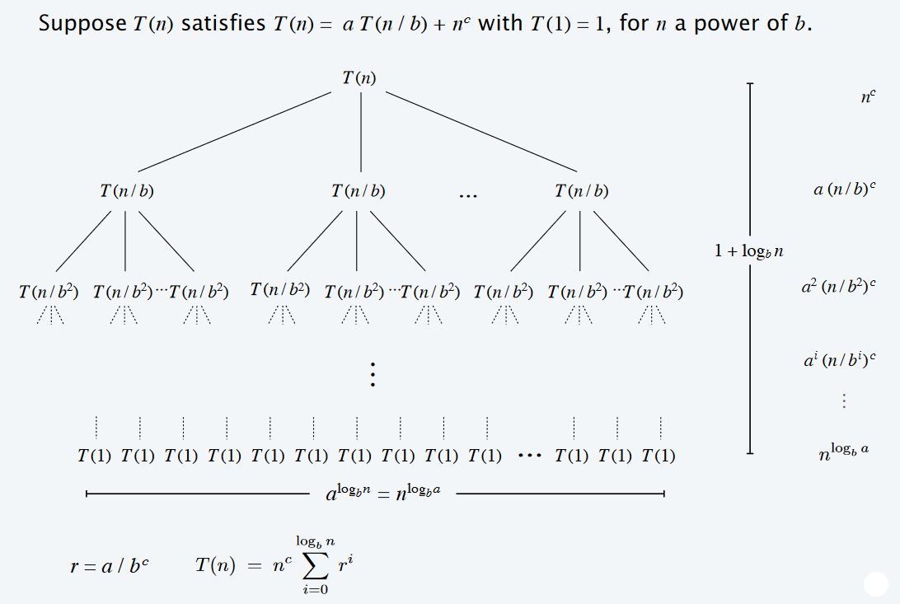
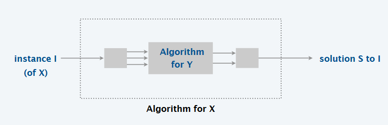
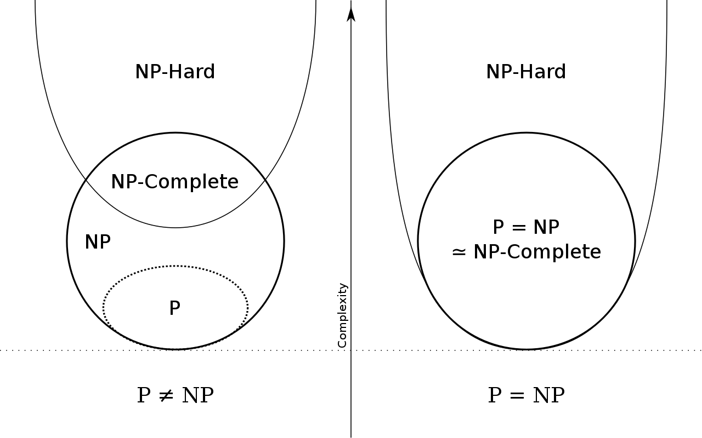

Greedy algorithms
Greedy algorithms don’t have a formal definition, but are captured by the notion of only considering each item once and independently from all other items, deciding whether to accept or reject it, for each item in the input in the order of a greedy rule. The correctness of the algorithm relies on the correctness of the greedy rule (order of processing).
Process the input in some order, and myopically and independently make irrevocable decisions about whether to accept or reject the input item and be in that order
SORT input, re-ordering such that f(input[k]) <= f(input[k+1]) for all k, where f is the greedy processing order
S <- {}
FOR j <- 1 TO N
IF input[j] satisfies the problem with all other items in S
ADD input[j] to S
ENDIF
ENDFOR
In order to implement this, we need to devise a “greedy rule”. Picking these can be tricky, with no definitive process for it - just trial and error/intuition.
Proof of correctness strategies
1.”Greedy algorithm stays ahead”
After each step, show that the output of the greedy algorithm is at least as good as any other argument.
Proof by contradiction is often convenient to show this:
- Assume greedy is not optimal
- Show that there is no way to improve the greedily selected output
2. Structural
Find a structural property (called a bound) that all optimal solutions must have, then show that the greedy algorithm always satisfies it.
Hence, we approach problems like this by:
- Finding a property of all optimal solutions
- Show that the greedily selected output always satisfies this property
3. Exchange argument
Gradually transform any solution to the one found by the greedy algorithm without hurting its quality.
This can be approached by direct proof, or by more complicated methods.
Divide and conquer algorithms
The key idea behind divide and conquer algorithms is the three steps:
- Divide the problem into disjoint subproblems of the same kind
- Solve the subproblems recursively
- Combine the subproblems together to form a solution
Assessing the speed of divide and conquer algorithms
Consider an algorithm which creates two subproblems, each of half the size, and takes linear time to recombine them
Recursive definition
We can express a recursive expression for their time complexity as follows: \(T(n) \leq \begin{cases} 0, & \text{if}\ n=1 \\ 2 \cdot T(n/2) + n, & \text{otherwise} \end{cases}\)
This allows us to take a problem which would take \(\Theta(n^2)\) time to brute force, and solve it in \(O(n\ log\ n)\) time
Drawing recursive trees
We can draw diagrams to visualise recursive trees, and help use calculate their running times

The Master theorem
A “recipe for solving common divide and conquer recurrences” - recursive expressions of the form:
\[T(n) = \begin{cases} 0, & \text{if}\ n=1 \\ a \cdot T(n/b) + \Theta(n^c), & \text{otherwise} \end{cases} \\ T(1) = \Theta(1) \quad\quad\quad\quad\quad\quad\quad\quad\quad\quad\quad\quad\]Where:
- \(a \geq 1\) is the number of subproblems
- b \(\geq 2\) is the factor by which the subproblem size decreases (this also allows for \(\lceil \frac{n}{b} \rceil\) and \(\lfloor \frac{n}{b} \rfloor\) in the place of \(\frac{n}{b}\))
- \(n^c\ ,\ \exists c > 0\) is the work needed to combine the subproblems back together into a solution
This then has solutions in the three different cases:
- If \(c < log_b\ a\), then \(T(n) = \Theta(n^{log_b\ a})\)
- If \(c = log_b\ a\), then \(T(n) = \Theta(n^c\ log\ n)\)
- If \(c > log_b\ a\), then \(T(n) = \Theta(n^c)\)
This can also be extended in the following ways:
- The \(\Theta\) can be replaced with \(O\) and \(\Omega\) in all cases
- The initial conditions can be replaced with \(T(n) = \Theta(1)\ ,\ \forall n \leq n_0\), and only require the recurrence to hold for \(n > n_0\)
Dynamic programming
The key idea behind dynamic programming algorithms is the three steps:
- Break up the problem into a series of overlapping subproblems
- Solve the subproblems
- Combine the subproblems together to form a solution
It is “a fancy name for caching intermediate results in a table for later re-use”.
The \(OPT\) equation
The \(opt\) equation is essential for solving subproblems of increasing size. The \(OPT\) function utilises the \(opt(j)\) equation, where \(opt(j)\) is the value of the optimal solution to the problem consisting of subproblems \(\{1, 2, ..., j\}, j\in n\).
The \(OPT\) function provides hints as to which subproblems have solutions that are part of the optimal solution to the entire problem. There are two ‘cases’ that can arise when the \(OPT\) function is used:
- Case 1: \(OPT\) does not select a subproblem \(j\)
- There must be an optimal solution that consists of jobs \(\{1, 2, ..., j-1\}\).
- Case 2: \(OPT\) selects a subproblem \(j\)
- We collect the profit (some additional reward which contributes towards our target, such in as the max-weight scheduling problem) of including \(j\) in the optimal solution.
By computing \(OPT(j), \forall j \in n\) we are computing the solutions to all subproblems in this wider problem.
We must now choose which of these subproblems answer our wider problem- hence leading to the above two cases.
The Bellman Equation: using the \(OPT\) equation to recombine subproblem solutions
- The Bellman equation is a formalised way of deciding how to recombine all previous subproblems into our optimal solution.
- The goal of the Bellman equation (at every step) is to include the subproblem that will lead to the greatest success in terms of the problem at hand.
An example of the Bellman equation for the max-weight scheduling problem is shown: \(OPT(j) = \begin{cases} 0 & \text{if}\ j=0 \\ max\{OPT(j-1), w_{j}+OPT(p(j))\} & \text{otherwise} \end{cases} \\\) Where:
- \(OPT(j-1)\) is the optimal solution for all previous jobs to \(j\)
- \(w_{j}\) is the current amassed weight
- \(OPT(p(j))\) refers to a smaller compatible subproblem where \(p(j) < j\).
- \(p(j_{i})\) is the largest index such that this index appears before the current \(j\), and it is still compatible with \(j\).
- \(p(j)\) in this context therefore does not have to immediately precede subproblem \(j\)- it is most likely the index of the largest compatible subproblem so far.
- The notion of an ‘index’ is particularly useful as we tend to cache our results in a table (otherwise known as several 1-D arrays).
Proving \(O(n)\) performance
We use a progress measure \(\Phi\) to indicate the number of initialised entries among \(M[1,2,...,n]\) where \(M\) is our memory.
- Initially, \(\Phi=0, \Phi \leq n\)
- In the event of case \(2\) where \(OPT(j)\) selects \(j\), \(\Phi\) increases by 1
- This happens in fewer than \(2n\) recursive calls
Memoization
Memoization is the concept of caching the solutions to computationally expensive function calls, so they do not need to be re-calculated later.
The reason we memoize is so that we do not have to re-solve a recursive problem tree at each step. Instead, we store the previously calculated values of each node and leaf in the tree, and just look them up. We can still solve this tree starting from the bottom (bottom-up) or the top (top-down), as the tree structure remains intact even when we cache the results. Memoization is a top-down approach where we assume we have already computed all subproblems and you are working from the top of the tree (the root) downwards.
We implement memoization by building up an array of the cached returned values from subproblem calls, caching the result of subproblem \(j\) in \(M[j]\). We can then lookup \(M[j]\), rather than re-solving \(j\). This might look like:
FUNCTION Solve_With_Memoization(j)
IF M[j] is uninitialised
M[j] <- solution to j as a recursive call
ENDIF
RETURN M[j]
ENDFUNCTION
M <- Empty array of size n
M[0] <- Base case
Solve_with_memoization(j)
The time complexity can then be analysed by counting the number of recursive calls, and multiplying it by the complexity of the function. If the number of recursive calls is less than \(n\) and no loops are used in the function, it is \(O(n)\). However, pre-processing may be needed, for example sorting a list, so the total time complexity of the algorithm could be higher, e.g. \(O(n\ log\ n)\)
Bottom-up recursion
We can also implement dynamic programming iteratively instead of recursively, which can be more intuitive and reduce overhead, e.g. having many stack frames.
We start iterating forward with \(j=0\), and grow the size of the subproblem we are solving at each stage, rather than splitting up the problem recursively. This might look like:
M <- Empty array of size n
M[0] <- Base case
FOR j <- 1 TO n
M[j] <- solution to j in terms of previous subproblem results stored in M
ENDFOR
RETURN M[n]
The time complexity can then be analysed by counting loops and elementary operations. If only elementary are used in finding the solution from the solutions to previous subproblems, then it is \(O(n)\). However, pre-processing may be needed, for example sorting a list, so the total time complexity of the algorithm could be higher, e.g. \(O(n\ log\ n)\)
Rebuilding the solution
As we can see above, the output of the top-down and bottom-up dynamic programming algorithms is just the final value of the last problem. In some cases, this might be the cost of the final path or similar, i.e. not the entire solution. We then need to go back through the cached solutions to build up the whole solution. This might look like:
FUNCTION Find_Solution(j)
IF j = 0
RETURN empty set
ELSE IF w_j + M[p[j]] > M[j-1]
RETURN {j} UNION Find_Solution(p[j])
ELSE
RETURN Find_Solution(p[j])
ENDIF
ENDFUNCTION
Using more than one variable in the \(OPT\) equation
- The most important factor to remain aware of is space and time performance.
- If you use a typical tabulation approach, you will end up with \(O(mn)\) time and \(O(n^{2})\) performance for a bi-variate problem. This is certainly less than ideal.
- You can achieve \(O(n)\) space by storing several 1-D arrays.
- You can improve the time performance by checking if any variables were updated in the previous iteration- depending on the type of problem you have, this can rule out any existing subproblems.
Intractability
Problems solvable in at most polynomial time are considered tractable
Polynomial time reductions
A problem \(X\) “polynomial time reduces” to a problem \(Y\) if arbitrary instances of \(X\) can be solved with:
- A polynomial number of computational steps
- A polynomial number of calls to an “oracle”, which solves \(Y\) in constant time
We refer to this reduction as \(X \leq_p Y\) (read polynomial reduction of \(X\) to \(Y\))

If \(X \leq_p Y\), then if \(Y\) is solvable in polynomial time, then \(X\) must be too, and vice versa.
If \(X \leq_p Y\) and \(Y \leq_p X\), then we say \(X \equiv_p Y\), which means \(X\) is solvable in polynomial time iff \(Y\) is too.
Reductions are also transitive, so \(X \leq_p Y \text{ and } Y \leq_p Z \implies X \leq_p Z\) - which is intuitively clear, as we can just compose together reductions to get along the chain
Complexity classes of algorithms
For these definitions, we restrict ourselves to decision (yes/no) problems for convenience. We can then say:
-
A problem \(X\) is a set of strings and an instance \(s\) is one string
-
An algorithm \(A\) solves this problem if: \(A(s) = \begin{cases} yes, & \text{if}\ s \in X \\ no, & \text{if}\ s \notin X \end{cases}\)
P
An algorithm \(A\) runs in polynomial time if for every string \(s\), then \(A(s)\) terminates in fewer than \(p(\vert s \vert)\) steps, where \(p\) is some polynomial function. This can be expressed as P is the set of decision problems for which there exists a polynomial time algorithm to find the solution.
NP
To define the NP class of problem, we first need some more vocabulary:
- A certificate \(t\) refers to a string of length at most \(P(n)\) which can help check whether a problem instance is true or false. For example, this could be a factor of the number which allows checking if a number is composite by simple division, or the subset which sums to the target which allows checking if a subset sum is possible by summation.
- An algorithm \(C(s,t)\) is a certifier for problem \(X\) if for every string \(s\), \(s \in X\) iff there exists a string \(t\) (the certificate) such that \(C(s,t) = yes\). This can be expressed as saying a certifier is an algorithm that always correctly checks whether a problem instance is correct given a certificate.
A problem is said to be NP if there exists a polynomial time algorithm \(C(s,t)\), where the certificate \(t\) is of polynomial size \(\vert t \vert \leq p(\vert s\vert )\) for some polynomial function \(p\)
EXP
A problem is said to be EXP if there exists an exponential time algorithm to solve it.
NP-Hard
A problem \(X\) is said to be NP-Hard if for every problem \(Y \in\) NP, \(Y \leq_p X\). This intuitively means that the problem is at least as hard as all other NP-Hard problems
NP-Complete
A problem is said to be NP-Complete if it is both NP-Hard (at least as hard as all the other NP-Hard problems) and NP (excludes bigger classes like EXP)
Hence, to show that a problem is NP-Complete, we do both of the following:
- Prove reduction from a known NP-Hard problem to it (shows it is NP-Hard)
- Show that there exists a valid certifier in polynomial time (shows it is NP)
P vs NP
It is not known whether P fully encompasses NP - this is a big unsolved problem in computer science. The diagrams of the above classes look like the following for P = NP and P \(\ne\) NP respectively:

Algorithmic complexity
Big-O \(O(n)\)
\(O(n)\) looks at best cases. \(f(n) = O(g(n))\) if
\[\begin{align} &f(n) \leq g(n) \cdot c,& &\text{for all } n \geq n_0, n \in \mathbb{N}& \\ && &\text{with some positive} \\ && &\text{constants } c \text{ and } n_0 \end{align}\]
This means that \(g(n)\cdot c\) will always be greater than or equals to \(f(n)\) after a certain threshold \(n_0\). You can think of it as a upper bound to \(f(n)\), where you’re saying that \(f(n)\) cannot get any “worse/slower” than this.
Big-Omega \(\Omega(n)\)
\(\Omega(n)\) looks at best cases. \(f(n) = \Omega(g(n))\) if
\[\begin{align} &f(n) \ge g(n) \cdot c,& &\text{for all } n \geq n_0, n \in \mathbb{N}& \\ && &\text{with some positive} \\ && &\text{constants } c \text{ and } n_0 \end{align}\]
This means that \(g(n)\cdot c\) will always be lesser than or equals to \(f(n)\) after a certain threshold \(n_0\). You can think of it as a lower bound to \(f(n)\), where you’re saying that \(f(n)\) cannot get any “better/faster” than this.
Big-Theta \(\Theta(n)\)
\(\Theta(n)\) looks at average cases. We say that \(f(n) = \Theta(g(n))\) when \(f(n)\) is asymptotically equal to \(g(n)\), this happens if and only if
\[f(n) = \Theta(g(n)) \iff f(n) = O(g(n)) \land f(n) = \Omega(g(n)) \\ \begin{align}\\ &g(n)\cdot c_\Omega \le f(n) \le g(n) \cdot c_O,& &\text{for all } n \geq n_0, n \in \mathbb{N}& \\ && &\text{with some positive} \\ && &\text{constants } c_O, c_\Omega, \text{ and } n_0 \end{align}\]
Here this means that for a specific \(g(n)\), we can scale it by two variables \(c_O\) and \(c_\Omega\) and \(f\) will be always “fit in-between” the two scaled \(g\) s after a certain threshold \(n_0\).